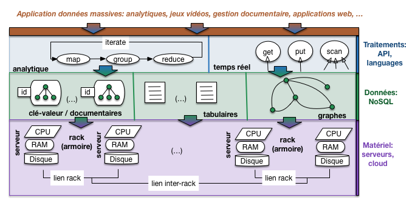
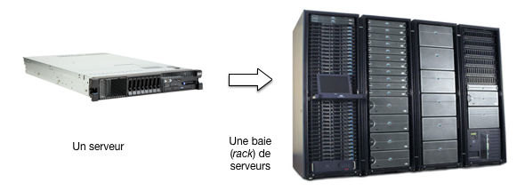
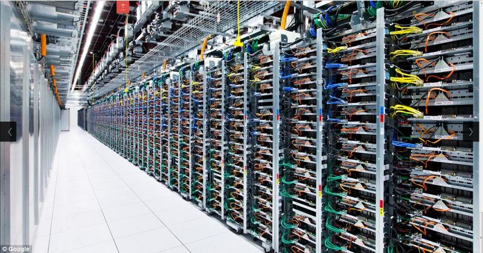
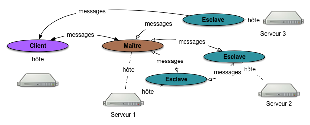
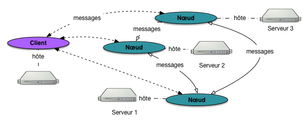
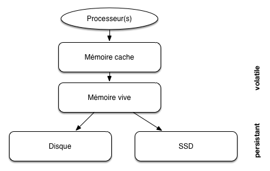
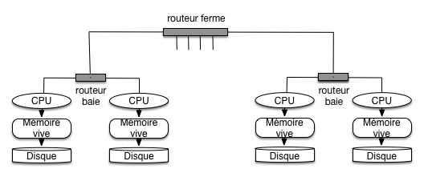
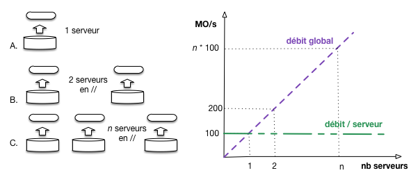
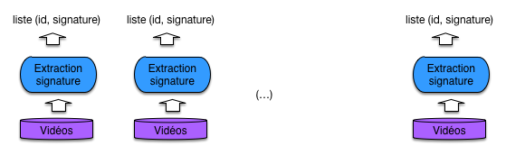
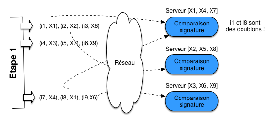

Le cloud, une nouvelle machine de calcul¶
Jusqu’à présent nous avons considéré le cas de la gestion de documents (ou plus généralement d’objets semi-structurés sérialisés) dans le contexte classique d’une unique machine tenant le rôle de serveur de données, et communiquant avec des applications clientes. Le serveur dispose d’un CPU, de mémoire RAM, d’un ou plusieurs disques pour la persistance. C’est une architecture classique, courante, facile à comprendre. Elle permet de se pencher sur des aspects importants comme la modélisation des données, leur indexation, la recherche.
La problématique. Nous envisageons maintenant la problématique de la scalabilité et les méthodes pour l’aborder et la résoudre. Pour parler en termes intuitifs (pour l’instant) la scalabilité est la capacité d’un système à s’adapter à une croissance non bornée de la taille des données (nous parlons de données, et de traitements sur les données, c’est restrictif et voulu car c’est le sujet du cours). Cette croissance, si nous ne lui envisageons pas de limite, finit toujours par dépasser les capacités d’une seule machine. Si c’est en mémoire RAM, cette capacité se mesure au mieux en TeraOctets (TOs); si c’est sur le disque, en dizaines de TéraOctets. Même si on améliore les composants physiques, toujours viendra le moment où le serveur individuel sera saturé.
Un moyen de gérer la scalabilité est d’ajouter des machines au système, et d’en faire donc un système distribué. Cela ne va pas sans redoutables complications car il faut s’assurer de la bonne coopération des machines pour assumer une tâche commune. Cette méthode est aussi celle qui est privilégiée aujourd’hui pour faire face au déluge de production des données numériques (et de leurs utilisateurs). Nous en proposons dans ce qui suit une présentation qui se veut suffisamment exhaustive pour couvrir les techniques les plus couramment utilisées, en les illustrant par quelques systèmes représentatifs.
Une nouvelle perspective. Un mot, avant de rentrer dans le gras, sur le titre du chapitre qui fait référence au cloud, considéré comme un outil d’allocation de machines à la demande. Reconnaissons tout de suite que c’est un peu réducteur car le cloud a d’autres aspects, et on peut y recourir pour disposer d’une seule machine sans envisager la dimension de la scalabilité. Il serait plus correct de parler de grappe de serveurs mais c’est plus long.
Donc assumons le terme, dans une perspective générale qui définit le cloud comme une nouvelle machine de calcul à part entière, élastique et scalable, apte à prendre en charge des masses de données sans cesse croissantes. La première session va introduire cette perspective d’ensemble, et nous commencerons ensuite une investigation systématique de ses possibilités.
Note
Rappelons qu’un MégaOctet (MO), c’est \(10^6\) octets; un GigaOctet (GO) c’est \(10^9\) octets soit 1 000 MOs; un TéraOctet (TO) c’est \(10^{12}\) octets (1 000 GOs); un PétaOctet (PO) c’est \(10^{15}\) octets, 1 000 TOs. Le PO, c’est l’unité du volume de données gérés par les applications à l’échelle du Web. Pas besoin d’aller au-delà pour l’instant!
S1: cloud et données massives¶
Supports complémentaires:
Ce chapitre envisage le cloud comme une nouvelle machine de calcul en tant que telle, qui se distingue de celles que nous utilisons tous les jours par le fait qu’elle est constituée de composants autonomes (les serveurs) communiquant par réseau. Sur cette machine globale se déploient des logiciels dont la caractéristique commune est de tenter d’utiliser au mieux les ressources de calcul et de stockage disponible, de s’adapter à leur évolution (ajout/retrait de machines, ou pannes) et accessoirement de faciliter la tâche des utilisateurs, développeurs et administrateurs du système.
Vision générale¶
La Fig. 51 résume la vision sur laquelle nous allons nous appuyer pour l’étude des systèmes distribués.
Note
Je rappelle une dernière fois pour ne plus avoir à le préciser ensuite: la perspective adoptée ici est celle de la gestion de données massives. Les grilles de calcul par exemple n’entrent pas dans ce contexte. Autre rappel: ces données sont des unités d’information autonomes et identifiables que nous appelons documents pour faire simple.
La figure montre une organisation en couches allant du matériel à l’applicatif. Ces couches reprennent l’architecture classique d’un système orienté données: stockage et calcul au niveau bas, système de gestion de données au-dessus de la couche matérielle, interfaces d’accès au données ou de traitement analytique, et enfin applications s’appuyant sur ces interfaces pour la partie de leurs tâches relative aux accès et à la manipulation des données.
Qui dit architecture en couche dit abstraction. Idéalement, chaque couche prend en charge des problèmes techniques pour épargner à la couche supérieure d’avoir à s’en soucier. Un SGBD relationnel par exemple gère l’accès aux disques, la protection des données, la reprise sur panne, la concurrence d’accès, en isolant les applications de ces préoccupations qui leur compliqueraient considérablement la tâche. Les deux couches intermédiaires de notre architecture tiennent un rôle similaire.
{kind=link}

Fig. 51 Perspective générale sur les systèmes distribués dans un cloud¶
Pour bien comprendre en quoi ce rôle a des aspects particuliers dans le cadre d’un système distribué à grande échelle, commençons par la couche matérielle qui va principalement nous occuper dans ce chapitre.
La couche matérielle¶
Notre figure montre une couche matérielle constituée de serveurs reliés par un réseau. Chaque serveur dispose d’un processeur (souvent multi cœurs), d’une mémoire centrale à accès direct (RAM) et d’un ou plusieurs supports de stockage persistant, les disques.
Dans une grappe de serveur, les machines sont dotées de composants de base (soit essentiellement la carte mère, les disques et la connectique) et dépourvues de tous les petits accessoires des ordinateurs de bureau (clavier, souris, lecteur DVD, etc.). De plus, les composants utilisés sont souvent de qualité moyenne voire médiocre afin de limiter les coûts. On parle de commodity server dans le jargon du milieu. C’est un choix qui peut se résumer ainsi: on préfère avoir beaucoup de serveurs de qualité faible que quelques serveurs de très bonne qualité. Il a des conséquences très importantes, et notamment:
le faible coût des serveurs permet d’en ajouter facilement à la demande, et d’obtenir la scalabilité souhaitée;
d’un autre côté la qualité médiocre des composants implique un taux de panne relativement élevé; c’est un facteur essentiel qui impacte toutes les couches du système distribué.
Important
Dans les environnements de cloud proposés sous forme de service, les serveurs sont le plus souvent créés par virtualisation ce qui apporte plus de flexibilité pour la gestion du service mais impacte (modérément) les performances. Comme on ne peut pas parler de tout, on va ignorer cette option ici. Vous êtes maintenant familiarisés avec l’utilisation de Docker: imaginez ce que cela donne, en terme d’administration, si vous ne disposez pas d’une machine mais de quelques centaines ou milliers.
Les serveurs sont empilés dans des baies spéciales (rack) équipées pour leur fournir l’alimentation, la connexion réseau vers la grappe de serveur, la ventilation. La Fig. 52 montre un serveur et une baie typiques.
{kind=link}

Fig. 52 Un serveur et une baie de serveurs.¶
Enfin, les baies sont alignées les unes à côté des autres dans de grands hangars (les fameux data centers, ou grappes de serveurs), illustrés par la Fig. 53.
{kind=link}

Fig. 53 Une grappe de serveurs.¶
Les baies sont connectées les unes aux autres grâce à des routeurs, et la grappe de serveur est elle-même connectée à l’Internet par un troisième niveau de connexion (après ceux intra-baie, et inter-baies). On obtient une connectique dite « hiérarchique » qui joue un rôle dans la gestion des données massives.
Voici quelques ordres de grandeur pour se faire une idée de l’infrastructure matérielle d’un système à grande échelle:
une baie contient quelques dizaines de serveurs, typiquement une quarantaine;
les grappes de serveurs peuvent atteindre des centaines de baies: 100 baies = env. 4000 serveurs = des PétaOctets de stockage.
les grandes sociétés comme Google, Facebook, Amazon ont depuis longtemps dépassé le cap du million de serveurs: essayez d’en savoir plus si cela vous intéresse (pas si facile).
Pas besoin d’atteindre cette échelle pour commencer à faire du distribué: quelques machines (2 au minimum…) et on a déjà mis le pied dans la porte. Intervient alors la notion d”élasticité étroitement liée au cloud: étant donnée l’abondance de ressources, il est très facile d’allouer une ou plusieurs nouvelles machines à notre système. Si ce dernier est conçu de manière à être scalable (définition plus loin) il n’y a virtuellement pas de limite à l’accroissement de sa capacité matérielle.
Il faut souligner que dans l’infrastructure que nous présentons, la dépendance entre les serveurs est réduite au minimum. Ils ne partagent pas de mémoire ou de périphériques, et leur seul moyen de communiquer est l’échange de messages (message passing). Cela implique que si un serveur tombe en panne, l’impact reste local.
Gare à la panne¶
Une des conséquences importantes d’une infrastructure basée sur des serveurs à faible coût est la fréquence des pannes affectant le système. Ces pannes peuvent être matérielles, logicielles, ou liées au réseau. Elles sont temporaires (un composant ne répond plus pendant une période plus ou moins courte, puis réapparaît - typique des problèmes réseau) ou permanentes (un disque qui devient inutilisable).
La fréquence d’une panne est directement liée au nombre de composants. Si, pour prendre un exemple classique, un disque tombe en panne en moyenne tous les 10 ans, on aura affaire (en moyenne) à une panne par an avec 10 disques, et une panne par jour à partir de quelques milliers de disques ! Il ne s’agit que d’une moyenne: si tous les matériels ont été acquis au même moment, ils auront tendance à tomber en panne à peu près dans la même période.
L’ensemble du système distribué doit être conçu pour tolérer ces pannes et continuer à fonctionner, éventuellement en mode dégradé. La principale méthode pour faire face à des pannes est la redondance: on duplique par exemple systématiquement
les données (sur des disques différents!) pour pallier les défaillances de disque;
les composants logiciels dont le rôle est vital et dont la défaillance impliquerait l’arrêt complet du système (single point of failure) sont également dupliqués, l’un d’eux assurant la tâche et le (ou les) autre(s) étant prêts à prendre la relève en cas de défaillance.
Par ailleurs, le système doit être équipé d’un mécanisme de détection des pannes pour pouvoir appliquer une méthode de reprise et assurer la disponibilité permanente. En résumé, les pannes et leur gestion automatisée constituent un des soucis majeurs dans les environnements Cloud.
Systèmes distribués¶
La couche logicielle qui exploite les ressources d’une ferme de serveur constitue un système distribué. Son rôle est de coordonner les actions de plusieurs ordinateurs connectés par un réseau, en vue d’effectuer une tâche commune. Les systèmes NoSQL ont esentiellement en commun d’être des systèmes distribués dont la tâche principale est la gestion de grandes masses de données.
Messages et protocole¶
Commençons par quelques caractéristiques communes et un peu de terminologie. Un système distribué est constitué de composants logiciels (des processus) que nous appellerons nœuds. En règle générale, on trouve un nœud sur chaque machine, mais ce n’est pas une obligation.
Ces nœuds sont interconnectés par réseau et communiquent par échange de messages. La connexion au réseau s’effectue par un port numéroté. Dans le cas du Web par exemple (le système distribué le plus connu et le plus fréquenté!), le port est en général le port 80. Rien n’empêche d’avoir plusieurs nœuds sur une même machine, mais il faut dans ce cas associer à chacun un numéro de port différent. La configuration du système distribué consiste à énumérer la liste des nœuds participants, référencés par l’adresse de la machine et le numéro de port.
Le format des messages obéit à un certain protocole que nous n’avons pas à connaître en général. Certains systèmes utilisent le protocole HTTP (par exemple CouchDB, ou Elastic Search pour son interface REST), ce qui présente l’avantage d’une très bonne intégration au Web et une normalisation de fait (des librairies HTTP existent dans tous les langages), mais l’inconvénient d’une certaine lourdeur. La plupart des protocoles d’échange sont spécifiques.
Clients, maîtres et esclaves¶
L’organisation du système distribué dépend des différents types de nœuds, de leur interconnexion et des relations possibles avec le nœud-client (l’application). Nous allons essentiellement rencontrer deux topologies, illustrées respectivement par la Fig. 54 et la Fig. 55.
{kind=link}

Fig. 54 Une architecture avec maître-esclave¶
Dans la première, le système distribué est organisé selon une topologie maître-esclave. Un nœud particulier, le maître, tient un rôle central. Il est notamment chargé des tâches administratives du système
ajouter un nœud, en supprimer un autre,
surveiller la cohérence et la disponibilité du système,
appliquer une méthode de reprise sur panne le cas échéant.
Il est aussi souvent chargé de communiquer avec l’application cliente (qui constitue un troisième type de nœud). Dans une telle architecture, le nœud-maître communique avec les nœuds-esclaves, qui eux-mêmes peuvent communiquer entre eux. Un client qui s’adresse au système distribué envoie ses requêtes au nœud-maître, et ce dernier peut le mettre en communication avec un ou plusieurs nœuds-esclaves. En revanche, un nœud-client ne peut pas transmettre une requête directement à un esclave, ce qui évite des problèmes de concurrence et de cohérence que nous aurons l’occasion de détailler sur des exemples pratiques.
Insistons sur le fait que les nœuds sont des composants logiciels (des processus qui tournent en tâche de fond) hébergés par une machine. Il n’y a pas forcément de lien un-à-un entre un nœud et une machine. La Fig. 54 montre par exemple que le maître et un des esclaves sont hébergés par le serveur 1. En fait, tous les nœuds peuvent être sur une même machine. Le système reste distribué, mais pas vraiment scalable!
{kind=link}

Fig. 55 Une architecture multi-nœuds¶
Dans la seconde topologie (plus rare), il n’y a plus ni maître ni esclave, et on parlera en général de (multi-)nœuds, voire de (multi-)serveurs (au sens logiciel du terme). Dans ce cas (Fig. 55), le client peut indifféremment s’adresser à chaque nœud.
Cette topologie a la mérite d’éviter d’avoir un nœud particulier (le maître) dont l’existence est indispensable pour le fonctionnement global du système. On parle pour un tel nœud de point individuel de défaillance (single point of failure), situation que l’on cherche à éviter en principe. Cela rend l’ensemble du système plus fragile que si tous les nœuds ont des rôles équivalents. Cela dit, une architecture avec un maître est plus facile à mettre en œuvre en pratique et nous la rencontrerons plus souvent, associée à des dispositifs pour protéger les tâches du nœud-maître.
Gestion des pannes, ou failover¶
L’infrastructure à base de composants bon marché est soumise à des pannes fréquentes. Il est exclu de pallier ces pannes par la mobilisation permanente d’une armée d’ingénieurs système, et un caractère distinctif des systèmes distribués (et en particulier de ceux dits NoSQL) est d’être capable de fonctionner sans interruption en dépit des pannes, par application d’une méthode de reprise sur panne souvent désignée par le mot failover.
En règle générale, la reprise sur panne s’appuie sur deux mécanismes génériques:
un des nœuds est chargé de surveiller en permanence l’ensemble des nœuds du système par envoi périodique de messages de contrôle (heartbeat); en cas d’interruption de la communication, on va considérer qu’une panne est intervenue;
la méthode de reprise s’appuie sur la redondance des services et la réplication des données: pour tout composant fautif, on doit pouvoir trouver un autre composant doté des mêmes capacités.
Signalons un cas épineux: celui d’un partitionnement du réseau. Dans un système avec n machines, on se retrouve avec deux sous-groupes qui ne communiquent plus, l’un constitué de \(m\) machines, l’autre des \(n-m\) autres machines. Que faire dans ce cas? Qui continue à fonctionner et comment? Nous verrons en détail les méthodes de réplication et de reprise pour quelques systèmes représentatifs.
Les systèmes de stockage distribués, dits NoSQL¶
On peut considérer que les systèmes de gestion de données massives apparus depuis les années 2000, et collectivement regroupés sous le terme commode de « NoSQL », sont une réponse à la question: « quel outil me permettrait de tirer parti de ma grappe de serveur pour mes données, en limitant au maximum les difficultés liés à la distribution et au parallélisme? »
Une solution tout à fait naturelle aurait été d’adopter les systèmes relationnels distribués qui existent depuis longtemps et ont fait leur preuve. Pour des raisons qui tiennent à la nature plus « documentaire » des données massives (voir le début de ce cours) et à la perception des lourdeurs de certains aspects des systèmes relationnels (jointures et transactions notamment), un autre choix s’est imposé. Il consiste à sacrifier certaines fonctionnalités (modèle, langage normalisé et puissament expressif, transactions) au profit de la capacité à se déployer dans un environnement distribué, à en tirer parti au mieux, à fournir une méthode de failover automatique, et à faire preuve d’élasticité pour monter en puissance par ajout de nouvelles ressources.
Note
Le terme « NoSQL » est censé signifier quelque chose comme « Not Only SQL », soit l’idée que les systèmes relationnels ne sont pas bons à tout faire, et que certaines niches (dont la gestion de données à très grande échelle) imposent des choix différents (en fait, des sacrifices sur les fonctionnalités avancées: modèle de données, interrogation, cohérence). Aucune personne sensée ne prétend remplacer les systèmes relationnels dans la très grande majorité des applications, mais tous les systèmes NoSQL prétendent faire mieux en matière de scalabilité horizontale.
Les systèmes dits « NoSQL » sont extraordinairement variés. Un de leurs points communs est d’être conçus explicitement pour une infrastructure cloud semblable à celle que nous avons décrite ci-dessus. On retrouve dans cette conception des principes récurrents que nous allons justement essayer de mettre en valeur dans tout ce qui suit. Résumons-les:
capacité à exploiter de manière équilibrée un ensemble de machines en vue d’une tâche précise;
capacité à détecter les pannes et à s’y adapter automatiquement;
capacité à évoluer par ajout/suppression de nouvelles ressources matérielles, sans interruption de service.
Il n’est pas question ici d’énumérer tous les systèmes existants. Ce serait laborieux, répétitif et fragile puisqu’il en apparaît (et peut-être disparaît) tous les jours. Ce qu’il faut retenir essentiellement, c’est que:
ces systèmes fournissent nativement une adaptation à une infrastructure distribuée;
les modèles de données sont principalement de nature documentaire (ceux que nous étudions principalement), graphe (réputés assez peu scalables) et … pas de modèle du tout: on stocke des chaînes d’octets !
on peut distinguer les systèmes à orientation analytique (traitements longs appliqués à une partie significative des données à des fins statistiques) et temps réel (accès instantané, quelques millisecondes, à des unités d’informations/documents).
Malgré le côté foisonnant de la scène NoSQL, tous s’appuient sur quelques principes de base que nous allons étudier dans la suite du cours; connaissant ces principes, il est plus facile de comprendre les systèmes. Une précision très importante: aucune normalisation dans le monde du NoSQL. Choisir un système, c’est se lier les mains avec un modèle de données, un stockage, et une interface spécifique.
Une dernière remarque pour finir: les systèmes NoSQL les plus sophistiqués (Cassandra par exemple) tendent lentement à évoluer vers une gestion de données structurées, équipée d’un langage d’interrogation qui rappelle furieusement SQL. Bref, on se dirige vers ce qui ressemble fortement à du relationnel distribué.
Les systèmes de calcul distribués¶
Enfin la dernière couche de notre architecture est constituée de systèmes de calcul distribués qui s’appuient en général sur un système de stockage NoSQL pour accéder aux données initiales. Le premier système de ce type est Hadoop, équipé d’un moteur de calcul MapReduce. Une alternative plus sophistiquée est apparue en 2008 avec Spark, qui propose d’une part des opérations plus complètes, d’autre part un système de gestion des pannes plus performant. D’autres systèmes plus ou moins équivalents existent, dont Flink qui est spécialisé pour le traitement de grand flux de données.
Tout système informatique repose sur un ensemble de mécanismes de stockage et d’accès à l’information, les mémoires. Ces mémoires se différencient par leur prix, leur rapidité, le mode d’accès aux données (séquentiel ou par adresse) et enfin leur durabilité.
La gestion des mémoires est une problématique fondamentale des SGBD: pour une révision, je vous renvoie au chapitre « stockage » de mon cours sur les aspects systèmes des bases de données. Les notions essentielles sont revues ci-dessous, et reprise dans le cadre d’une ferme de serveur où le réseau et la topologie du réseau jouent un rôle important.
La hiérarchie des mémoires¶
D’une manière générale, plus une mémoire est rapide, plus elle est chère et – conséquence directe – plus sa capacité est réduite. Dans un cadre centralisé, mono-serveur, les mémoires forment une hiérarchie classique illustrée par la Fig. 56, allant de la mémoire la plus petite mais la plus efficace à la mémoire la plus volumineuse mais la plus lente. Un bonne partie du travail d’un SGBD consiste à placer l’information requise par une application le plus haut possible dans la hiérarchie des mémoires: dans le cache du processeur idéalement; dans la mémoire RAM si possible; au pire il faut aller la chercher sur le disque, et là ça coûte très cher.

Fig. 56 Hiérarchie des mémoires dans un serveur¶
La mémoire vive (que nous appellerons mémoire principale) et les disques (ou mémoire secondaire) sont les principaux niveaux à considérer pour des applications de bases de données. Une base de données est à peu près toujours stockée sur disque, pour les raisons de taille et de persistance, mais les données doivent impérativement être placées en mémoire vive pour être traitées.
Important
La mémoire RAM est une mémoire volatile dont le contenu est effacé lors d’une panne. Il est donc essentiel de synchroniser la mémoire avec le disque périodiquement (typiquement au moment d’un commit).
Si on considère maintenant un cloud, la hiérarchie se complète avec les liens réseaux connectant les serveurs. Du côté du réseau aussi on trouve une hiérarchie: les serveurs d’une même baie sont liés par un réseau rapide, mais les baies elles-mêmes sont liées par des routeurs qui limitent le débit des échanges.

Fig. 57 Hiérarchie des mémoires dans une ferme de serveurs¶
La Fig. 57 illustre les mémoires et leur communication dans une ferme de serveur. On pourrait y ajouter un troisième niveau de communication réseau, celui entre deux fermes de serveurs distinctes.
Performances¶
On peut évaluer (par des ordres de grandeur, car les variations sont importantes en fonction du matériel) les performances d’un système tel que celui de la Fig. 57 selon deux critères:
Temps d’accès, ou latence: connaissant l’adresse d’un document, quel est le temps nécessaire pour aller à l’emplacement mémoire indiqué par cette adresse et obtenir le document ? On parle de lecture par clé ou encore d’accès direct pour cette opération;
Débit: quel est le volume de données lues par unité de temps dans le meilleur des cas?
Important
Dans le cas d’un disque magnétique, le débit s’applique une lecture séquentielle respectant l’ordre de stockage des données sur le support. Si on effectue la lecture dans un ordre différent, il s’agit en fait d’une séquence d’accès directs, et c’est extrêmement lent.
Le temps d’un accès direct en mémoire vive est par exemple de l’ordre de 10 nanosecondes (\(10^{-8}\) sec.), de 0,1 millisecondes pour un SSD, et de l’ordre de 10 millisecondes (\(10^{-2}\) sec.) pour un disque. Cela représente un ratio approximatif de 1 000 000 (1 million!) entre les performances respectives de la mémoire centrale et du disque magnétique ! Un SSD est très approximativement 100 fois plus rapide (en accès direct) qu’un disque magnétique.
Tableau 12 Performance des divers types de mémoire¶ Type mémoire
Taille
Temps d’accès aléatoire
Débit en accès séquentiel
Mémoire cache (Static RAM)
Quelques MOs
\(\approx 10^{-8}\) (10 nanosec.)
Plusieurs dizaines de GOs par seconde
Mémoire principale (Dynamic RAM)
Quelques GOs
\(\approx 10^{-8} - 10^{-7}\) (10-100 nanosec.)
Quelques GO par seconde
Disque magnétique
Quelques TOs
\(\approx 10^{-2}\) (10 millisec.)
Env. 100 MOs par seconde.
SSD
Quelques TOs
\(\approx 10^{-4}\) (0,1 millisec.)
Jusqu’à quelques GOs par seconde.
En ce qui concerne les composants réseau, la méthode la plus courante est d’utiliser des routeurs Ethernet 48 ports offrant un débit d’environ 10 GigaBits/sec. On utilise un routeur de ce type pour chaque baie, en connectant par exemple les 40 serveurs de la baie. À un second niveau, les routeurs-baie sont connectés par un routeur-ferme qui se charge de mettre en communication les serveurs de baies différentes (Fig. 57). Les 8 ports restant au niveau de chaque baie sont par exemple utilisés pour cette connexion globale. Cela introduit un facteur d’agrégation (oversubscription) puisque chaque port « global » doit gérer le débit de 5 serveurs de la baie.
Note
Vous avez compris la phrase qui précède? Si non, réfléchissez.
RAM locale |
Disque local |
RAM Baie |
Disque baie |
RAM cloud |
Disque cloud |
|
|---|---|---|---|---|---|---|
Latence (micro sec) |
0.1 |
10 000 |
300 |
10 000 |
500 |
10 000 |
Débit (en MO/s) |
10 000 |
100 |
125 |
100 |
25 |
20 |
Le tableau ci-dessus donne les ordres de grandeur pour la latence et le débit au sein de la hiérarchie de mémoire (il faudrait ajouter les SSDs, cf. les performances de ces derniers). Ce ne sont que des estimations: le débit de 20 MO/s par exemple est obtenu en considérant que le facteur d’agrégation au niveau de chaque baie est de 5 (soit 100 MO/s divisé par 5), et en supposant que le trafic est équitablement réparti entre les 5 serveurs partageant un même port. L’accès la RAM d’un serveur en dehors de la baie subit l’effet combiné du réseau (10 Gbits/s, soit 1,25 GO/s) et du facteur 5.
Il reste à donner une idée du coût. À ce jour (2024) voici ce qu’il en est pour une mémoire de 1 TO.
RAM: environ 3 000 $
SSD: environ 100 $
Disque: environ 20 $
C’est sans doute moins cher si on achète en gros, mais cela donne une idée du rapport. Le SSD est très attractif mais reste encore presque 5 fois plus cher qu’un disque magnétique classique.
Quiz¶


S2: La scalabilité¶
Supports complémentaires:
Il est temps de revenir sur la notion de scalabilité pour la définir précisément, et de donner quelques exemples pour comprendre en pratique ce que cela implique.
Une définition¶
Voici une définition assez générale, basée sur les notions (à expliciter) de « système », « performance » et « ressource ».
Définition (scalabilité).
Un système est scalable si ses performances sont proportionnelles aux ressources qui lui sont allouées.
Il s’agit d’une notion très stricte de la scalabilité, qu’il est difficile d’obtenir en pratique mais nous donne une idée précise du but à atteindre.
Explicitons maintenant les notions sur lesquelles repose la définition. Dans notre cas, la notion de système est assez bien identifiée: il s’agit de l’environnement distribué de gestion/traitement de données basé sur l’architecture de la Fig. 51.
Les ressources sont les composants matériels que l’on peut ajouter au système. Il s’agit essentiellement des serveurs, mais on peut aussi prendre en compte des dispositifs liés au réseau comme les routeurs. La consommation des ressources s’évalue essentiellement selon les unités de grandeur suivantes:
la mémoire RAM alouée au système;
le temps de calcul;
la mémoire secondaire (disque)
la bande passante (réseau).
La notion de performance est la plus flexible. Voici les deux acceptions principales que nous allons étudier.
débit: c’est le nombre d’unités d’information (documents) que nous pouvons traiter par unité de temps, toutes choses égales par ailleurs;
latence: c’est le temps mis pour accéder à une unité d’information (document), en lecture et/ou en écriture.
Au lieu de mesurer le débit en documents/seconde, on regarde souvent le nombre d’octets (par exemple, 10 MO/s). C’est équivalent si on accepte que les documents ont une taille moyenne avec un écart-type pas trop élevé. En ce qui concerne la latence, on mesure souvent le nombre d’accès par seconde sur un nombre important d’opérations, afin de lisser les écarts, et on nomme cette mesure transactions par seconde (abrégé par tps).
Exemple: comptons les documents¶
Pour mettre en évidence la scalabilité, conformément à la définition ci-dessus, il faut quantifier les grandeurs ressource et performance et montrer que leur rapport est constant pour un volume de données fixé. Prenons un premier exemple: on veut compter le nombre de documents dans le système. Charge serveur effectue indépendamment son propre comptage. Il exécute pour cela une opération qui consiste à charger en mémoire centrale les données stockées sur des disques magnétiques. On mesure le débit de cette opération en MO/s (Fig. 58).
{kind=link}

Fig. 58 Mesure de scalabilité¶
Avec un seul serveur, on constate un débit de 100 MO/s. Avec deux serveurs, on peut répartir les données équitablement et effectuer les lectures en parallèle: on obtient un débit de 200 MO/s. Il n’est pas difficile d’extrapoler et de considérer que si on a n serveurs, le débit sera de n * 100 MO/s.
Attention: dans ce scénario on suppose que tous les accès sont de nature locale, et qu’il n’y a pas d’échange entre les serveurs. À la fin de l’opération on obtient le nombre de documents sur chaque serveur, et cette information (un entier sur 4 ou 8 octets) est suffisamment petite pour être transférée au client qui effectue l’agrégation.
Le traitement est scalable. La figure montre le débit global: c’est bien une droite exprimant la dépendance linéaire entre le nombre de ressources et la performance. La droite en vert montre que le débit par serveur est constant: c’est une condition nécessaire mais pas suffisante pour garantir la scalabilité au niveau du système global. Si toutes les données devaient par exemple transiter dans un unique tuyau de débit 1 GO/s, au bout de 10 serveurs en parallèle ce tuyau constituerait le goulot d’étranglement du système.
Comme le montre cet exemple simple, la scalabilité nécessite d’envisager le système de manière globale, en veillant à l’équilibre de tous ses composants.
Autre exemple: cherchons les doublons¶
Prenons un exemple un peu plus complexe. On veut chercher d’éventuels doublons dans notre collection de vidéos. Après d’intenses réflexions, le groupe d’ingénieur NFE204 décide d’implanter un algorithme en deux étapes.
la première parcourt les vidéos et produit, pour chacune, une signature (cf. http://en.wikipedia.org/wiki/Digital_video_fingerprinting); cette première étape se fait localement;
la seconde étape regroupe les signatures; si deux signatures (ou plus) égales sont trouvées, c’est un doublon!
La première étape est à peu de choses près le parcours en parallèle de tous les disques, associé à un traitement local pour extraire la signature (Fig. 59 ). Le résultat est une liste de paires (id, signature) où l’id de chaque document est associé à sa signature.
{kind=link}

Fig. 59 Extraction des signatures¶
La seconde étape va nécessiter des échanges réseau. On va associer chaque serveur à une partie des signatures, par hachage. Par exemple (très simple), si on a n serveurs, on va associer une signature h au serveur mod(h, n). La Fig. 60 illustre le cas de 3 serveurs: les signatures X1 et X4 sont envoyées au serveur 1 puisque mod(1,3)=mod(4,3)=1.
On envoie alors chaque paire (i, s) issue de l’étape 1, constituée d’un identifiant i et d’une signature s au serveur associé à s. Si deux signatures sont égales, elles se retrouveront sur le même serveur. Il suffit donc d’effectuer, localement, une comparaison de signatures pour reporter les doublons. C’est le cas pour les documents i1 et i8 dans la Fig. 60.
{kind=link}

Fig. 60 Transfert des signatures et détection des doublons.¶
Le traitement est-il scalable? Oui en ce qui concerne la première étape, pour les raisons analysées dans le premier exemple: le traitement s’effectue localement sur chaque serveur, de manière indépendante.
La seconde étape implique un transfert réseau de l’ensemble des listes produites dans la première étape. Il faut donc tout d’abord comparer le coût du transfert réseau, celui de la lecture des données, et celui du traitement. Les données échangées (ici, des paires de valeurs) sont certainement beaucoup plus petites que les documents. Il est possible alors que le transfert réseau de ces listes soit 100 ou 1000 fois moins coûteux que le parcours des documents et l’extraction de la signature. Dans ce cas le coût prépondérant est celui de la première étape, et le traitement global est scalable.
Si le coût des transferts réseaux est comparable (ou supérieur) à celui des traitements, il faudrait, pour que la scalabilité soit stricte, qu’il soit possible d’améliorer le débit dans la grappe de serveur proportionnellement au nombre de serveurs. C’est typiquement difficile, à moins de recourir à du matériel de connectique très sophistiqué et donc très coûteux. Il est plus probable que le débit restera constant ou, pire se dégradera avec l’ajout de nouveaux serveurs. L’échange réseau devient le facteur entravant la scalabilité.
Quelques conclusions¶
En pratique, il est difficile d’augmenter les performances du réseau proportionnellement aux ressources, et les transferts sont l’un des facteurs qui peuvent limiter la scalabilité en pratique. La situation la plus favorable est celle de notre premier exemple, où l’essentiel des traitements se fait localement, avec un résultat de taille négligeable qu’il est ensuite possible de transférer à une autre machine ou à l’application cliente. Plus généralement, il faut être attentif à limiter le plus possible la taille des données échangées entre les serveurs de manière à ce que le coût des transferts reste négligeable par rapport à celui des traitements.
Le fait d’être scalable (selon notre définition) ne veut pas dire que le temps de calcul est acceptable. Si un traitement prend 10 ans, il prendra encore 5 ans en doublant les ressources… La première chose à faire est de s’en apercevoir à l’avance en effectuant des tests et en mesurant le coût des éléments dans la chaîne de traitement. Ensuite, il faut voir si on peut optimiser.
Quand un traitement est complètement optimisé, et que la durée prévisible reste trop élevée, la question suivante est : suis-je prêt à allouer les ressources nécessaires? Et là, si la réponse est non, il est temps de reconsidérer la définition du problème. La définition du BigData, ça pourrait être: toutes les données que je peux me permettre de stocker, et pour lesquelles il existe au moins un traitement assez intéressant au vu des ressources que je dois y consacrer. À méditer.
Quiz¶
3: Calculs distribués¶
Supports complémentaires
Reportez-vous au chapitre Recherche exacte pour une présentation du modèle MapReduce d’exécution. Rappelons que MapReduce n’est pas un langage d’interrogation de données, mais un modèle d’exécution de chaînes de traitement dans lesquelles des données (massives) sont progressivement transformées et enrichies.
Pour être concrets, nous allons prendre l’exemple (classique) d’un traitement s’appliquant à une collection de documents textuels et déterminant la fréquence des termes dans les documents (indicateur TF, cf. chap-ranking). Pour chaque terme présent dans la collection, on doit donc obtenir le nombre d’occurrences.
Le principe de localité des données¶
Dans une approche classique de traitement de données stockées dans une base, on utilise une architecture client-serveur dans laquelle l’application cliente reçoit les données du serveur. Cette méthode est difficilement applicable en présence d’un très gros volume de données, et ce d’autant moins que les collections sont stockées dans un système distribué. En effet:
le transfert par le réseau d’une large collection devient très pénalisant à grande échelle (disons, le TéraOctet);
et surtout, la distribution des données est une opportunité pour effectuer les calculs en parallèle sur chaque machine de stockage, opportunité perdue si l’application cliente fait tout le calcul.
Ces deux arguments se résument dans un principe dit de localité des données (data locality). Il peut s’énoncer ainsi: les meilleures performances sont obtenues quand chaque fragment de la collection est traité localement, minimisant les besoins d’échanges réseaux entre les machines.
Note
Reportez-vous au chapitre Le cloud, une nouvelle machine de calcul pour une analyse quantitative montrant l’intérêt de ce principe.
L’application du principe de localité des données mène à une architecture dans laquelle, contrairement au client-serveur, les données ne sont pas transférées au programme client, mais le programme distribué à toutes les machines stockant des données (Fig. 61).

Fig. 61 Principe de localité des données, par transfert des programmes¶
En revanche, demander à un développeur d’écrire une application distribuée basée sur ce principe constitue un défi technique de grande ampleur. Il faut en effet concevoir simultanément les tâches suivantes:
implanter la logique de l’application, autrement dit le traitement particulier qui peut être plus ou moins complexe;
concevoir la parallélisation de cette application, sous la forme d’une exécution concurrente coordonnant plusieurs machines et assurant un accès à un partitionnement de la collection traitée;
et bien entendu, gérer la reprise sur panne dans un environnement qui, nous l’avons vu, est instable.
Un framework d’exécution distribuée comme MapReduce est justement dédié à la prise en charge des deux derniers aspects, spécifiques à la distribution dans un cloud, et ce de manière générique. Le framework définit un processus immuable d’accès et de traitement, et le programmeur implante la logique de l’application sous la forme de briques logicielles confiées au framework et appliquées par ce dernier dans le cadre du processus.
Avec MapReduce, le processus se déroule en deux phases, et les « briques logicielles » consistent en deux fonctions fournies par le développeur. La phase de Map traite chaque document individuellement et applique une fonction map() dont voici le pseudo-code pour notre application de calcul du TF.
function mapTF($id, $contenu)
{
// $id: identifiant du document
// $contenu: contenu textuel du document
// On boucle sur tous les termes du contenu
foreach ($t in $contenu) {
// Comptons les occurrences du terme dans le contenu
$count = nbOcc ($t, $contenu);
// On "émet" le terme et son nombre des occurrences
emit ($t, $count);
}
}
La phase de Reduce reçoit des valeurs groupées sur la clé et applique une agrégation de ces valeurs. Voici le pseudo-code pour notre application TF.
function reduceTF($t, $compteurs)
{
// $t: un terme
// $compteurs: la séquence des décomptes effectués localement par le Map
$total = 0;
// Boucles sur les compteurs et calcul du total
foreach ($c in $compteurs) {
$total = $total + $c;
}
// Et on produit le résultat
return $total;
}
Dans ce cadre restreint, le framework prend en charge la distribution et la reprise sur panne.
Important
Ce processus en deux phases et très limité et ne permet pas d’exprimer des algorithmes complexes, ceux basés par exemple sur une itération menant progressivement au résultat. C’est l’objectif essentiel de modèles d’exécution plus puissants que nous présentons ultérieurement.
Exécution distribuée d’un traitement MapReduce¶
La Fig. 62 résume l’exécution d’un traitement ( »job ») MapReduce avec un framework comme Hadoop. Le système d’exécution distribué fonctionne sur une architecture maître-esclave dans laquelle le maître (JobTracker dans Hadoop) se charge de recevoir la requête de l’application, la distribue sous forme de tâche à des nœuds (TaskTracker dans Hadoop) accédant aux fragments de la collection, et coordonne finalement le déroulement de l’exécution. Cette coordination inclut notamment la gestion des pannes.

Fig. 62 Exécution distribuée d’un traitement MapReduce¶
L’application cliente se connecte au maître, transmet les fonctions de Map et de Reduce, et soumet la demande d’exécution. Le client est alors libéré, en attente de la confirmation par le maître que le traitement est terminé (cela peut prendre des jours …). Le framework fournit des outils pour surveiller le progrès de l’exécution pendant son déroulement.
Le traitement s’applique à une source de données partitionnée. Cette source peut être un simple système de fichiers distribués, un système relationnel, un système NoSQL type MongoDB ou HBase, voire même un moteur de recherche comme Solr ou ElasticSearch.
Le Maître dispose de l’information sur le partitionnement des données (l’équivalent du contenu de la table de routage, présenté dans le chapitre sur le partitionnement) ou la récupère du serveur de données. Un nombre M de serveurs stockant tous les fragments concernés est alors impliqué dans le traitement. Idéalement, ces serveurs vont être chargés eux-mêmes du calcul pour respecter le principe de localité des données mentionné ci-dessus. Un système comme Hadoop fait de son mieux pour respecter ce principe.
La fonction de Map est transmise aux M serveurs et une tâche dite Mapper applique la fonction à un fragment. Si le serveur contient plusieurs fragments (ce qui est le cas normal) il faudra exécuter autant de tâches. Si le serveur est multi-cœurs, plusieurs fragments peuvent être traités en parallèle sur la même machine.
Exemple: le partitionnement des données pour l’application TF
Supposons par exemple que notre collection contienne 1 milliard de documents dont la taille moyenne est de 1000 octets. On découpe la collection en fragments de 64 MOs. Chaque fragment contient donc 64 000 documents. Il y a donc à peu près \(\lceil 10^9/64,000 \rceil \approx 16,000\) fragments. Si on dispose de 16 machines, chacune devra traiter (en moyenne) 1000 fragments et donc exécuter mille tâches de Mapper.
Le parallélisme peut alors être interne à une machine, en fonction du nombre de cores dont elle dispose. Une machine 4 cores pourra ainsi effectuer 4 tâches en parallèle en théorie.
Chaque mapper travaille, dans la mesure du possible, localement: le fragment est lu sur le disque local, document par document, et l’application de la fonction de Map « émet » des paires (clé, valeur) dites « intermédiaires » qui sont stockées sur le disque local. Il n’y a donc aucun échange réseau pendant la phase de Map (dans le cas idéal où la localité des données peut être complètement respectée).
Exemple: la phase de Map pour l’application TF
Supposons que chaque document contienne en moyenne 100 termes distincts. Chaque fragment contient 64 000 documents. Un Mapper va donc produire 6 400 000 paires (t, c) où t est un terme et c le nombre d’occurrences.
À l’issue de la phase de Map, le maître initialise la phase de Reduce en choisissant R machines disponibles. Il faut alors distribuer les paires intermédiaires à ces R machines. C’est une phase « cachée », dite de shuffle, qui constitue potentiellement le goulot d’étranglement de l’ensemble du processus car elle implique la lecture sur les disques des Mappers de toutes les paires intermédiaires, et leur envoi par réseau aux machines des Reducers.
Important
Vous noterez peut-être qu’une solution beaucoup plus efficace serait de transférer immédiatement par le réseau les paires intermédiaires des Mappers vers les Reducers. Il y a une explication à ce choix en apparence sous-optimal: c’est la reprise sur panne (voir plus loin).
Pour chaque paire intermédiaire, un simple algorithme de hachage permet de distribuer les clés équitablement sur les R machines chargées du Reduce.
Au niveau d’un Reducer \(R_i\), que se passe-t-il?
Tout d’abord il faut récupérer toutes les paires intermédiaires produites par les Mappers et affectées à \(R_i\).
Il faut ensuite trier ces paires sur la clé pour regrouper les paires partageant la même clé. On obtient des paires (k, [v]) où k est une clé, et [v] la liste des valeurs reçues par le Reducer pour cette clé.
Enfin, chacune des paires (k, [v]) est soumise à la fonction de Reduce.
Exemple: la phase de Reduce pour l’application TF
Supposons R=10. Chaque Reducer recevra donc en moyenne 640 000 paires (t, c) de chaque Mapper. Ces paires sont triées sur le terme t. Pour chaque terme on a donc la liste des nombres d’occurences trouvés dans chaque document par les Mappers. Au pire, si un terme est présent dans chaque document, le tableau [v] contient un million d’entiers.
Il reste, avec la fonction de Reduce, à faire le total de ces nombres d’occurences pour chaque terme.
Exemple: comptons les loups et le moutons
Vous souvenez-vous de ces quelques documents?
A:
Le loup est dans la bergerie.B:
Les moutons sont dans la bergerie.C:
Un loup a mangé un mouton, les autres loups sont restés dans la bergerie.D:
Il y a trois moutons dans le pré, et un mouton dans la gueule du loup.
Ils sont maintenant stockés dans un système partitionné sur 3 serveurs comme montré sur la Fig. 63. Nous appliquons notre traitement TF pour compter le nombre total d’occurrences de chaque terme (on va s’intéresser aux termes principaux).

Fig. 63 Un exemple minuscule mais concret¶
Nous avons trois Mappers qui produisent les données intermédiaires présentées sur la figure. Comprenez-vous pourquoi le terme bergerie apparaît deux fois pour le premier Mapper par exemple?
La phase de Reduce, avec 2 Reducers, n’est illustrée que pour le terme loup donc on suppose qu’il est affecté au premier Reducer. Chaque Mapper transmet donc ses paires intermédiaires (loup, …) à R1 qui se charge de regrouper et d’appliquer la fonction de Reduce.
Quand tous les Reducers ont terminé, le résultat est disponible sur leur disque local. Le client peut alors le récupérer.
La reprise sur panne¶
Comment assurer la gestion des pannes pour une exécution MapReduce? Dans la mesure où elle peut consister en centaines de tâches individuelles, il est inenvisageable de reprendre l’ensemble de l’exécution si l’une de ces tâches échoue, que ce soit en phase de Map ou en phase de Reduce. Le temps de tout recommencer, une nouvelle panne surviendrait, et le job ne finirait jamais.
Le modèle MapReduce a été conçu dès l’origine pour que la reprise sur panne puisse être gérée au niveau de chaque tâche individuelle, et que la coordination de l’ensemble soit également résiliente aux problèmes de machine ou de réseau.
Le Maître délègue les tâches aux machines et surveille la progression de l’exécution. Si une tâche semble interrompue, le Maître initie une action de reprise qui dépend de la phase.
Panne en phase de Reduce¶
Si la machine reste accessible et que la panne se résume à un échec du processus, ce dernier peut être relancé sur la même machine, et si possible sur les données locales déjà transférées par le shuffle. C’est le cas le plus favorable.
Dans un cas plus grave, avec perte des données par exemple, une reprise plus radicale consiste à choisir une autre machine, et à relancer la tâche en réinitialisant le transfert des paires intermédiaires depuis les machines chargées du Map. C’est possible car ces paires ont été écrites sur les disques locaux et restent donc disponibles. C’est une caractéristique très importante de l’exécution MapReduce: l’écriture complète des fragments intermédiaires garantit la possibilité de reprise en cas de panne.
Une méthode beaucoup plus efficace mais beaucoup moins robuste consisterait à ce que chaque mapper transfère immédiatement les paires intermédiaires, sans écriture sur le disque local, vers la machine chargée du Reduce. Mais en cas de panne de ce dernier, ces paires intermédiaires risqueraient de disparaître et on ne saurait plus effectuer la reprise sur panne (sauf à ré-exécuter l’ensemble du processus).
Cette caractéristique explique également la lenteur (déspérante) d’une exécution MapReduce, due en grande partie à la nécessité d’effectuer des écritures et lectures répétées sur disque, à chaque phase.
Panne en phase Map¶
En cas de panne pendant l’exécution d’une tâche de Map, on peut soit reprendre la tâche sur la même machine si c’est le processus qui a échoué, soit transférer la tâche à une autre machine. On tire ici parti de la réplication toujours présente dans les systèmes distribués: quel que soit le fragment stocké sur une machine, il existe un réplica de ce fragment sur une autre, et à partir de ce réplica une tâche équivalente peut être lancée.
Le cas le plus pénalisant est la panne d’une machine pendant la phase de transfert vers les Reducers. Il faut alors reprendre toutes les tâches initialement allouées à la machine, en utilisant la réplication.
Et le maître?¶
Finalement, il reste à considérer le cas du Maître qui est un point individuel d’échec: en cas de panne, il faut tout recommencer.
L’argument des frameworks comme Hadoop est qu’il existe un Maître pour des dizaines de travailleurs, et qu’il est peu probable qu’une panne affecte directement le serveur hébergeant le nœud-Maître. Si cela arrive, on peut accepter de reprendre l’ensemble de l’exécution, ou prendre des mesures préventives en dupliquant toutes les données du Maître sur un nœud de secours.
Quiz¶
Exercices¶
Exercice Ex-S1-1: quel cloud pour notre application?
À partir de maintenant on va se placer dans le scénario d’une gestion (légale!) de vidéos à la demande. La collection est essentiellement constituée de vidéos d’une taille moyenne de 500 MO. À chaque vidéo on associe quelques méta données (de taille négligeable) comme son titre, ses auteurs, l’année de réalisation, etc. Au départ on a 10 000 vidéos, mais on espère rapidement en gérer 1 000 000 (un million).
Faites une petite étude économique pour déterminer quel serait le coût annuel d’une grappe de serveurs pour stocker ce million de vidéos. Regardez les offres de quelques fournisseurs: Amazon EC2, Microsoft Azure, Google Cloud Computing, OVH, Gandi, ….
À vous de choisir la configuration de vos serveurs. Vous avez un budget serré ! Et n’oubliez pas
de prendre en compte la réplication pour faire face aux pannes inévitables.
de prendre en compte le coût du traffic réseau pour installer vos vidéos et les transmettre à vos clients.
Vous avez le droit de faire un fichier Excel (ou équivalent) résumant les tailles et performance de vos composants, le coût d’exploitation, etc. Vous aurez un coût unitaire par vidéo, et en fonction du nombre de clients, vous pouvez même déterminer un tarif (merci de rémunérer les auteurs).
Exercice Ex-S1-2: combien de pannes?
Essayons d’estimer le taux de panne dans mon système. On dispose des données suivantes:
le taux annuel de panne (Annual Failure Rate) de mes disques est de 4%;
chaque serveur se plante 3 fois par an en moyenne;
je constate que chaque baie se trouve coupée du réseau 3 fois par mois, coupure d’une durée suffisante pour que je doive appliquer un failover.
Estimez le nombre moyen de disques perdus par an, de redémarrages de serveur par an/mois/jour, de pannes de réseau par mois/jour.
Exercice Ex-S1-3: quelques calculs
Je dois exécuter mon traitement de recherche de doublons dans les vidéos, décrit dans la section sur la scalabilité. J’applique une fonction d’extraction de signature, f, et pour l’instant je ne considère que la première étape.
Supposons pour commencer que le coût du traitement par f soit négligeable par rapport à la lecture des vidéos sur les disques. Combien de temps faut-il (dans le meilleur des cas) pour avoir parcouru toutes les vidéos dans votre cloud (reprenez la configuration choisie précédemment).
Ma fonction f prend 1s pour chaque MO; combien de temps faudra-t-il pour avoir testé toutes mes vidéos?
Jusqu’où faut-il que j’optimise ma fonction f pour que l’accès au disque redevienne prépondérant?
J’arrive à optimiser mon traitement: 2 millisecondes par MO. Quelle solution me reste-t-il?
Exercice Ex-S1-4: et avec le réseau?
Maintenant je considère la deuxième étape, et je suppose qu’une paire (id, signature) occupe en moyenne 100 octets. Calculer le temps de transfert, en supposant (1) que toutes les machines sont dans une même baie, avec un débit de 1 Gbits/s et (2) qu’elles sont dans des baies distinctes, avec un débit moyen de 200 Mbits/s.
Exercice Ex-mapred-1: un grep, en MapReduce
On veut scanner des millards de fichiers et afficher tous ceux qui contiennent une chaîne de caractères c. Donnez la solution en MapReduce, en utilisant le formalisme de votre choix (de préférence un pseudo-code un peu structuré quand même).
Exercice Ex-mapred-2: un rollup, en MapReduce
Une grande surface enregistre tous ses tickets de caisse, indiquant les produits vendus, le prix et la date, ainsi que le client si ce dernier a une carte de fidélité.
Les produits sont classés selon une taxonomie comme illustré sur la Fig. 64,
avec des niveaux de précision.
Pour chaque produit on sait à quelle catégorie précise de N1 il appartient (par exemple, chaussure);
pour chaque catégorie on connaît son parent.

Fig. 64 Les produits et leur classement.¶
Supposons que la collection Tickets contienne
des documents de la forme (idTicket, idClient, idProduit, catégorie, date, prix).
Comment obtenir en MapReduce le total des ventes à une date d, pour le niveau N2?
On fait donc une agrégation de Tickets au niveau supérieur de la
taxonomie.
Exercice `_Ex-mapred-3`_: algèbre linéaire distribuée
Nous disposons le calcul d’algèbre linéaire du chapitre `chap-mapreduce`_. On a donc une matrice M de dimension \(N \times N\) représentant les liens entres les \(N\) pages du Web, chaque lien étant qualifié par un facteur d’importance (ou « poids »). La matrice est représentée par une collection math:C dans laquelle chaque document est de la forme {« id »: &23, « lig »: i, « col »: j, « poids »: \(m_{ij}\)}, et représente un lien entre la page \(P_i\) et la page \(P_j\) de poids \(m_{ij}\)
Vous avez déjà vu le calcul de la norme des lignes de la matrice, et celui du produit de la matrice par un vecteur \(V\). Prenons en compte maintenant la taille et la distribution.
Questions
On estime qu’il y a environ \(N=10^{10}\) pages sur le Web, avec 15 liens par page en moyenne. Quelle est la taille de la collection \(C\), en TO, en supposant que chaque document a une taille de 16 octets
Nos serveurs ont 2 disques de 1 TO chacun et chaque document est répliqué 2 fois (donc trois versions en tout). Combien affectez-vous de serveurs au système de stokage?
Maintenant, on suppose que \(V\) ne tient plus dans la mémoire RAM d’une seule machine. Proposez une méthode de partitionnement de la collection \(C\) et de \(V\) qui permette d’effectuer le calcul distribué de \(M \times V\) avec MapReduce sans jamais avoir à lire le vecteur sur le disque.
Donnez le critère de partitionnement et la technique (par intervalle ou par hachage).
Supposons qu’on puisse stocker au plus deux (2) coordonnées d’un vecteur dans la mémoire d’un serveur. Inspirez-vous de la Fig. 63 pour montrer le déroulement du traitement distribué précédent en choisissant le nombre minimal de serveurs permettant de conserver le vecteur en mémoire RAM.
Pour illustrer le calcul, prenez la matrice \(4\times4\) ci-dessous, et le vecteur \(V = [4,3,2,1]\).
\[\begin{split}M= \left[ {\begin{array}{cccc} 1 & 2 & 3 & 4 \\ 7 & 6 & 5 & 4 \\ 6 & 7 & 8 & 9 \\ 3 & 3 & 3 & 3 \\ \end{array} } \right]\end{split}\]
Expliquez pour finir comment calculer la similarité cosinus entre \(V\) et les lignes \(L_i\) de la matrice.

Ce cours de Philippe Rigaux est mis à disposition selon les termes de la licence Creative Commons Attribution - Pas d’Utilisation Commerciale - Partage dans les Mêmes Conditions 4.0 International.
Table Of Contents
- Introduction
- Préliminaires: Docker
- Modélisation de bases NoSQL
- Recherche exacte
- Etude de cas: Cassandra
- Cassandra - Travaux Pratiques
- Recherche approchée
- ElasticSearch - Travaux pratiques
- Traitements par lot
- Pig : Travaux pratiques
- Le cloud, une nouvelle machine de calcul
- Systèmes NoSQL: la réplication
- Systèmes NoSQL: le partitionnement
- Annales des examens
Recherche
Saisissez un ou plusieurs mots-clés.